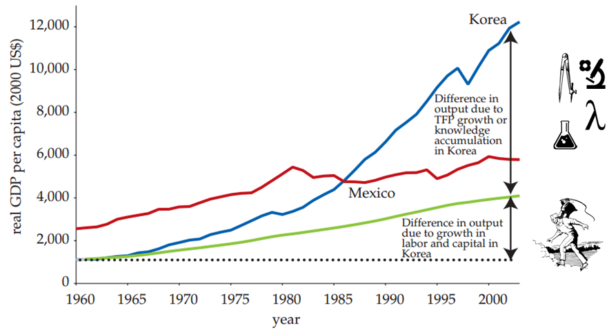
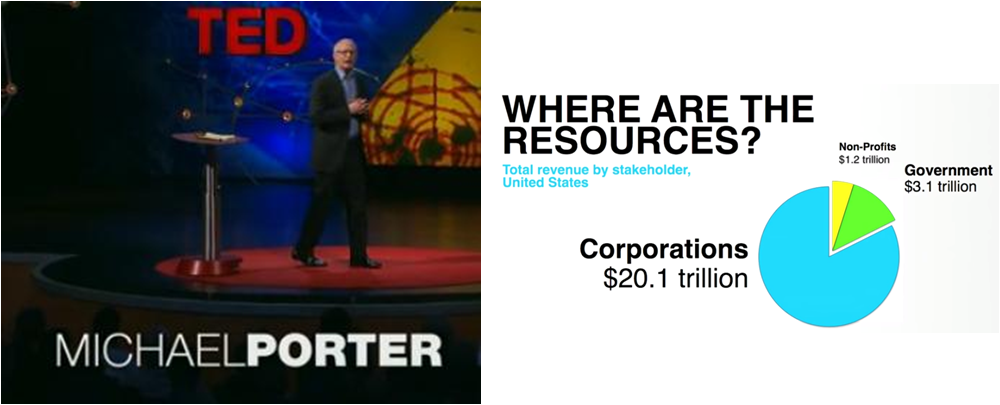
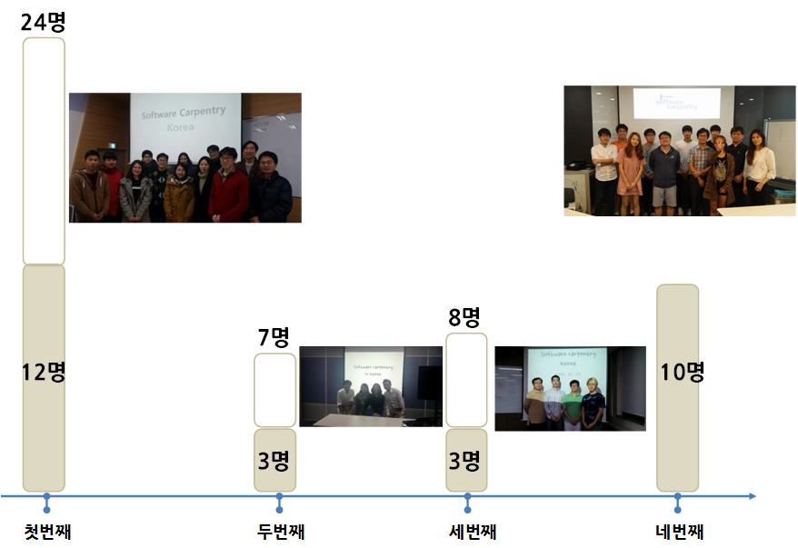
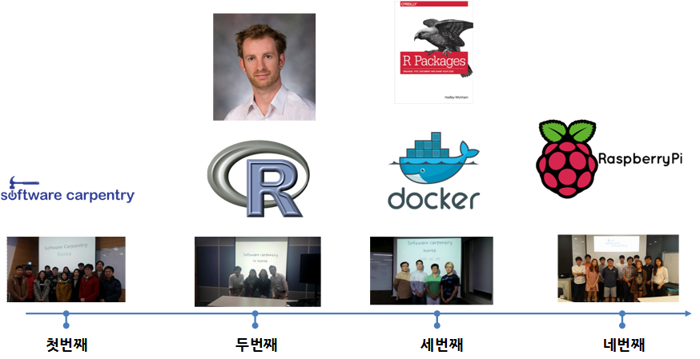
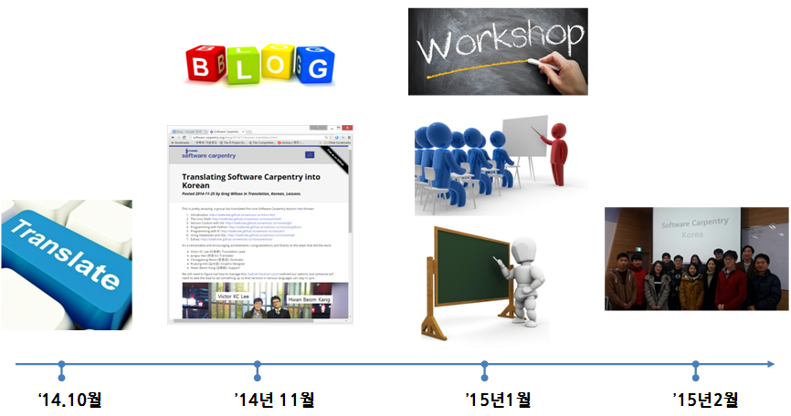

한국에서 SW 카펜트리 1년...
2015년 8월

소프트웨어 카펜트리 미션
좀더 생산적으로 연구를 수행하기 위해서 과학, 공학, 의학 분야의 지식근로자에게 과학 컴퓨팅(scientific computing) 기본적인 기술을 가르친다.
문제(Problem) 정의
- 과학자가 소프트웨어를 개발하고 사용하는데 점점더 많은 시간을 보낸다.
- 거의 대부분의 과학자는 소프트웨어를 독학한다.
- 과학자가 소프트웨어를 얼마나 잘 하고있는지 측정하기는 어렵다.
- 하지만, (실험심리학)일화적 증거를 통해서 "그다지" 잘 하고 있지 않다고 함.
소프트웨어 카펜트리 해답
- 과학자가 과학자를 가르침.
- 실습을 통한 2일 학습
| 유닉스 쉘(Shell) | ⇒ | 반복작업 자동화 |
| Git와 GitHub | ⇒ | 작업 추적과 협업 |
| 파이썬 혹은 R | ⇒ | 모듈방식 코드 개발 |
| SQL | ⇒ | 자료 관리 |
추진 결과(Outcomes)
- 생산성 10-20% 평균적으로 향상
- 생산성 10배 이상 향상된 것도 드물지 않음
- 기존 작업을 더 빠르게 처리
- 새로운 문제를 해결에 매진
- HPC, 클라우드, 빅데이터에 대한 준비 ...
- 공개 과학(open science) 추진 시작
과학기술 컴퓨팅(Scientific Computing)
GDP 성장에 지식(Knowledge) 기여분  출처: 세계은행(2010), Korea as a Knowledge Economy -Evolutionary Process and Lessons Learned (2006)스타트업의 역할
사회 문제의 해결책으로 스타트업  출처:Micheal Porter, “Why business can be good at solving social problems”, Ted, Jun 2013소프트웨어 카펜트리 워크샵 참석
소프트웨어 카펜트리 워크샵 중점 추진 사항
소프트웨어 카펜트리 워크샵 준비
 Translating Software Carpentry into Korean/